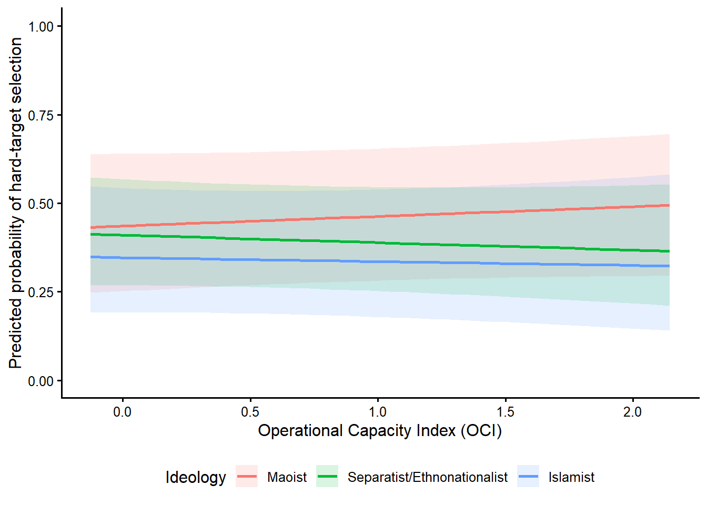

Excel file loaded successfully.Sheet 1 rows: 13929 Sheet 1 columns: 160 Sheet 2 rows: 316 ============================================================ORGANIZATIONS MEETING THE 50-ATTACK THRESHOLD============================================================# A tibble: 25 × 3
organization total_count ideology_sheet2
<chr> <dbl> <chr>
1 Hizbul Mujahideen (HM) 279 Islamist
2 Lashkar-e-Taiba (LeT) 237 Islamist
3 Jaish-e-Mohammad (JeM) 125 Islamist
4 Muslim Separatists 118 Islamist
5 Muslim Militants 87 Islamist
6 Indian Mujahideen 53 Islamist
7 Communist Party of India - Maoist (CPI-Maoist) 2092 Maoist
8 Maoists 1857 Maoist
9 People's War Group (PWG) 97 Maoist
10 People's Liberation Front of India 84 Maoist
11 Naxalites 66 Maoist
12 Sikh Extremists 710 Separatist/Eth…
13 United Liberation Front of Assam (ULFA) 391 Separatist/Eth…
14 National Democratic Front of Bodoland (NDFB) 175 Separatist/Eth…
15 Garo National Liberation Army 169 Separatist/Eth…
16 National Socialist Council of Nagaland-Isak-Muiv… 105 Separatist/Eth…
17 People's Liberation Army (India) 93 Separatist/Eth…
18 Bodo Militants 87 Separatist/Eth…
19 National Liberation Front of Tripura (NLFT) 80 Separatist/Eth…
20 Separatists 79 Separatist/Eth…
21 Kashmiri extremists 77 Separatist/Eth…
22 National Socialist Council of Nagaland-Khaplang … 67 Separatist/Eth…
23 Gorkha Janmukti Morcha (GJM) 67 Separatist/Eth…
24 Gurkha National Liberation Front (GNLF) 59 Separatist/Eth…
25 Jammu and Kashmir Liberation Front 53 Separatist/Eth…
Eligible organizations by ideology:# A tibble: 3 × 3
ideology_sheet2 eligible_organizations sheet2_attack_count
<chr> <int> <dbl>
1 Islamist 6 899
2 Maoist 5 4196
3 Separatist/Ethnonationalist 14 2212
Total eligible organizations: 25 Total attacks represented in Sheet 2: 7307 ============================================================SAMPLE AFTER APPLYING SHEET 2 THRESHOLD============================================================Incidents before complete-case filtering: 7307 Organizations before complete-case filtering: 25 Organization-years before complete-case filtering: 356
Sheet 1 and Sheet 2 ideological classifications match.============================================================SAMPLE AFTER OCI MATCHING============================================================# A tibble: 14 × 2
Statistic Value
<chr> <dbl>
1 Incidents 7034
2 Organizations 24
3 Organization-years 310
4 Hard-target incidents 3025
5 Soft-target incidents 4009
6 Hard-target percentage 43.0
7 Soft-target percentage 57.0
8 First observed year 1980
9 Last observed year 2020
10 Observed years 40
11 Mean OCI 1.23
12 OCI standard deviation 0.707
13 Minimum OCI -1.78
14 Maximum OCI 2.19
OCI-matched sample by ideology:# A tibble: 3 × 7
ideology Incidents Organizations `Organization-years` `Hard targets`
<fct> <int> <int> <int> <int>
1 Maoist 4177 5 73 1736
2 Separatist/Ethnon… 2008 13 158 750
3 Islamist 849 6 79 539
# ℹ 2 more variables: `Soft targets` <int>, `Hard-target percentage` <dbl>============================================================FINAL COMMON ANALYTICAL SAMPLE============================================================# A tibble: 9 × 2
Statistic Value
<chr> <dbl>
1 Incidents 6971
2 Organizations 24
3 Organization-years 308
4 Hard-target incidents 3000
5 Soft-target incidents 3971
6 First observed year 1980
7 Last observed year 2020
8 Observed year categories 40
9 Estimated year fixed-effect coefficients 39
Sample by ideology:# A tibble: 3 × 7
ideology incidents organizations organization_years hard_targets soft_targets
<fct> <int> <int> <int> <int> <int>
1 Maoist 4169 5 72 1732 2437
2 Separati… 1955 13 157 730 1225
3 Islamist 847 6 79 538 309
# ℹ 1 more variable: hard_target_percentage <dbl>============================================================ORGANIZATION INCLUSION TABLE============================================================# A tibble: 25 × 6
organization total_count ideology_sheet2 ideology analytical_incidents
<chr> <dbl> <chr> <fct> <int>
1 Hizbul Mujahideen … 279 Islamist Islamist 272
2 Lashkar-e-Taiba (L… 237 Islamist Islamist 235
3 Jaish-e-Mohammad (… 125 Islamist Islamist 120
4 Muslim Separatists 118 Islamist Islamist 113
5 Muslim Militants 87 Islamist Islamist 80
6 Indian Mujahideen 53 Islamist Islamist 27
7 Communist Party of… 2092 Maoist Maoist 2084
8 Maoists 1857 Maoist Maoist 1849
9 People's War Group… 97 Maoist Maoist 94
10 People's Liberatio… 84 Maoist Maoist 83
11 Naxalites 66 Maoist Maoist 59
12 Sikh Extremists 710 Separatist/Eth… Separat… 665
13 United Liberation … 391 Separatist/Eth… Separat… 388
14 National Democrati… 175 Separatist/Eth… Separat… 172
15 Garo National Libe… 169 Separatist/Eth… Separat… 164
16 National Socialist… 105 Separatist/Eth… Separat… 102
17 People's Liberatio… 93 Separatist/Eth… Separat… 83
18 Bodo Militants 87 Separatist/Eth… Separat… 41
19 National Liberatio… 80 Separatist/Eth… Separat… 74
20 Separatists 79 Separatist/Eth… Separat… 48
21 Kashmiri extremists 77 Separatist/Eth… Separat… 75
22 National Socialist… 67 Separatist/Eth… Separat… 60
23 Gorkha Janmukti Mo… 67 Separatist/Eth… <NA> 0
24 Gurkha National Li… 59 Separatist/Eth… Separat… 35
25 Jammu and Kashmir … 53 Separatist/Eth… Separat… 48
# ℹ 1 more variable: included_in_final_sample <chr>
Eligible organizations lost after complete-case filtering:# A tibble: 1 × 6
organization total_count ideology_sheet2 ideology analytical_incidents
<chr> <dbl> <chr> <fct> <int>
1 Gorkha Janmukti Mor… 67 Separatist/Eth… <NA> 0
# ℹ 1 more variable: included_in_final_sample <chr>============================================================MODEL 0============================================================Generalized linear mixed model fit by maximum likelihood (Laplace
Approximation) [glmerMod]
Family: binomial ( logit )
Formula: target_category ~ 1 + (1 | organization)
Data: analysis
Control: model_control
AIC BIC logLik -2*log(L) df.resid
9062.4 9076.1 -4529.2 9058.4 6969
Scaled residuals:
Min 1Q Median 3Q Max
-2.3138 -0.7666 -0.5772 1.0829 2.8430
Random effects:
Groups Name Variance Std.Dev.
organization (Intercept) 0.9762 0.988
Number of obs: 6971, groups: organization, 24
Fixed effects:
Estimate Std. Error z value Pr(>|z|)
(Intercept) -0.1641 0.2081 -0.789 0.43============================================================MODEL 1============================================================Generalized linear mixed model fit by maximum likelihood (Laplace
Approximation) [glmerMod]
Family: binomial ( logit )
Formula: target_category ~ ideology + year + (1 | organization)
Data: analysis
Control: model_control
AIC BIC logLik -2*log(L) df.resid
8961.6 9256.1 -4437.8 8875.6 6928
Scaled residuals:
Min 1Q Median 3Q Max
-3.2101 -0.8194 -0.5476 1.0477 4.6135
Random effects:
Groups Name Variance Std.Dev.
organization (Intercept) 1.099 1.048
Number of obs: 6971, groups: organization, 24
Fixed effects:
Estimate Std. Error z value Pr(>|z|)
(Intercept) 12.1697 1.2596 9.661 < 2e-16 ***
ideologySeparatist/Ethnonationalist -0.1585 0.5665 -0.280 0.780
ideologyIslamist 0.4154 0.6549 0.634 0.526
year1981 -25.8966 35.5178 -0.729 0.466
year1982 -12.1743 1.9281 -6.314 2.72e-10 ***
year1983 -12.5417 1.3730 -9.135 < 2e-16 ***
year1984 -12.4490 1.2401 -10.038 < 2e-16 ***
year1985 -11.1044 1.3353 -8.316 < 2e-16 ***
year1986 -12.3030 1.2525 -9.823 < 2e-16 ***
year1987 -11.8758 1.2192 -9.741 < 2e-16 ***
year1988 -12.6466 1.2178 -10.385 < 2e-16 ***
year1989 -12.0124 1.2160 -9.879 < 2e-16 ***
year1990 -11.9314 1.2044 -9.906 < 2e-16 ***
year1991 -11.5550 1.2010 -9.621 < 2e-16 ***
year1992 -11.8820 1.2064 -9.849 < 2e-16 ***
year1994 -11.5281 1.2312 -9.364 < 2e-16 ***
year1995 -13.1247 1.2279 -10.688 < 2e-16 ***
year1996 -10.8677 1.2271 -8.856 < 2e-16 ***
year1997 -12.4806 1.2404 -10.062 < 2e-16 ***
year1998 -12.4014 1.3415 -9.245 < 2e-16 ***
year1999 -10.9614 1.2522 -8.754 < 2e-16 ***
year2000 -12.2843 1.2057 -10.189 < 2e-16 ***
year2001 -12.2633 1.2046 -10.181 < 2e-16 ***
year2002 -12.5926 1.2171 -10.346 < 2e-16 ***
year2003 -12.4027 1.2106 -10.245 < 2e-16 ***
year2004 -13.3234 1.2562 -10.606 < 2e-16 ***
year2005 -13.2990 1.2190 -10.910 < 2e-16 ***
year2006 -12.6794 1.1967 -10.595 < 2e-16 ***
year2007 -12.4263 1.2051 -10.311 < 2e-16 ***
year2008 -12.9594 1.1815 -10.968 < 2e-16 ***
year2009 -12.3286 1.1776 -10.469 < 2e-16 ***
year2010 -12.7160 1.1773 -10.801 < 2e-16 ***
year2011 -12.7179 1.1769 -10.806 < 2e-16 ***
year2012 -12.1744 1.1777 -10.337 < 2e-16 ***
year2013 -12.1739 1.1778 -10.336 < 2e-16 ***
year2014 -12.2158 1.1764 -10.384 < 2e-16 ***
year2015 -12.6269 1.1761 -10.736 < 2e-16 ***
year2016 -12.6753 1.1760 -10.778 < 2e-16 ***
year2017 -12.7971 1.1761 -10.880 < 2e-16 ***
year2018 -12.7202 1.1767 -10.810 < 2e-16 ***
year2019 -13.0098 1.1788 -11.037 < 2e-16 ***
year2020 -12.7061 1.1809 -10.760 < 2e-16 ***
---
Signif. codes: 0 '***' 0.001 '**' 0.01 '*' 0.05 '.' 0.1 ' ' 1============================================================MODEL 2: MAIN MODEL============================================================Generalized linear mixed model fit by maximum likelihood (Laplace
Approximation) [glmerMod]
Family: binomial ( logit )
Formula:
target_category ~ ideology * OCI + conflict_region + ln_lagged_district_terrorism_intensity +
year + (1 | organization)
Data: analysis
Control: model_control
AIC BIC logLik -2*log(L) df.resid
8892.6 9235.1 -4396.3 8792.6 6921
Scaled residuals:
Min 1Q Median 3Q Max
-3.4095 -0.8047 -0.5475 1.0091 5.0065
Random effects:
Groups Name Variance Std.Dev.
organization (Intercept) 0.7195 0.8482
Number of obs: 6971, groups: organization, 24
Fixed effects:
Estimate Std. Error z value Pr(>|z|)
(Intercept) 12.22426 3.01425 4.055 5.00e-05
ideologySeparatist/Ethnonationalist -0.10485 0.55726 -0.188 0.850762
ideologyIslamist -0.37585 0.59752 -0.629 0.529338
OCI 0.10946 0.13893 0.788 0.430748
conflict_regionKashmir 1.27854 0.25139 5.086 3.66e-07
conflict_regionMaoist-affected belt 0.21320 0.20395 1.045 0.295844
conflict_regionNortheast -0.06413 0.37347 -0.172 0.863656
ln_lagged_district_terrorism_intensity 0.15822 0.02456 6.443 1.17e-10
year1981 -26.28321 28.63584 -0.918 0.358701
year1982 -12.55945 3.34690 -3.753 0.000175
year1983 -13.02391 3.07510 -4.235 2.28e-05
year1984 -13.02604 3.00781 -4.331 1.49e-05
year1985 -11.75074 3.04650 -3.857 0.000115
year1986 -12.80245 3.01119 -4.252 2.12e-05
year1987 -12.45779 2.99685 -4.157 3.23e-05
year1988 -13.23910 2.99559 -4.420 9.89e-06
year1989 -12.67013 2.99439 -4.231 2.32e-05
year1990 -12.71776 2.99049 -4.253 2.11e-05
year1991 -12.09329 2.98797 -4.047 5.18e-05
year1992 -12.50573 2.99019 -4.182 2.89e-05
year1994 -11.91092 3.00103 -3.969 7.22e-05
year1995 -13.79763 3.00148 -4.597 4.29e-06
year1996 -11.50106 3.00006 -3.834 0.000126
year1997 -12.70912 3.00575 -4.228 2.35e-05
year1998 -12.82547 3.05025 -4.205 2.61e-05
year1999 -11.35788 3.00981 -3.774 0.000161
year2000 -12.70074 2.99084 -4.247 2.17e-05
year2001 -12.78072 2.98897 -4.276 1.90e-05
year2002 -13.30136 2.99642 -4.439 9.03e-06
year2003 -12.90027 2.99054 -4.314 1.61e-05
year2004 -13.84124 3.01082 -4.597 4.28e-06
year2005 -13.63543 2.99664 -4.550 5.36e-06
year2006 -13.09276 2.98538 -4.386 1.16e-05
year2007 -12.92865 2.99062 -4.323 1.54e-05
year2008 -13.28355 2.98134 -4.456 8.37e-06
year2009 -12.85192 2.97934 -4.314 1.61e-05
year2010 -13.41254 2.97948 -4.502 6.74e-06
year2011 -13.38110 2.97940 -4.491 7.08e-06
year2012 -12.75537 2.97932 -4.281 1.86e-05
year2013 -12.73639 2.97945 -4.275 1.91e-05
year2014 -12.78546 2.97899 -4.292 1.77e-05
year2015 -13.23340 2.97878 -4.443 8.89e-06
year2016 -13.33365 2.97853 -4.477 7.58e-06
year2017 -13.50353 2.97902 -4.533 5.82e-06
year2018 -13.42997 2.97916 -4.508 6.55e-06
year2019 -13.64961 2.97995 -4.580 4.64e-06
year2020 -13.36847 2.98010 -4.486 7.26e-06
ideologySeparatist/Ethnonationalist:OCI -0.19815 0.18854 -1.051 0.293282
ideologyIslamist:OCI -0.15871 0.23683 -0.670 0.502760
(Intercept) ***
ideologySeparatist/Ethnonationalist
ideologyIslamist
OCI
conflict_regionKashmir ***
conflict_regionMaoist-affected belt
conflict_regionNortheast
ln_lagged_district_terrorism_intensity ***
year1981
year1982 ***
year1983 ***
year1984 ***
year1985 ***
year1986 ***
year1987 ***
year1988 ***
year1989 ***
year1990 ***
year1991 ***
year1992 ***
year1994 ***
year1995 ***
year1996 ***
year1997 ***
year1998 ***
year1999 ***
year2000 ***
year2001 ***
year2002 ***
year2003 ***
year2004 ***
year2005 ***
year2006 ***
year2007 ***
year2008 ***
year2009 ***
year2010 ***
year2011 ***
year2012 ***
year2013 ***
year2014 ***
year2015 ***
year2016 ***
year2017 ***
year2018 ***
year2019 ***
year2020 ***
ideologySeparatist/Ethnonationalist:OCI
ideologyIslamist:OCI
---
Signif. codes: 0 '***' 0.001 '**' 0.01 '*' 0.05 '.' 0.1 ' ' 1============================================================MODEL 3: TACTICAL ROBUSTNESS============================================================Generalized linear mixed model fit by maximum likelihood (Laplace
Approximation) [glmerMod]
Family: binomial ( logit )
Formula:
target_category ~ ideology * OCI + conflict_region + ln_lagged_district_terrorism_intensity +
attack_type + weapon_type + year + (1 | organization)
Data: analysis
Control: model_control
AIC BIC logLik -2*log(L) df.resid
8288.0 8740.1 -4078.0 8156.0 6905
Scaled residuals:
Min 1Q Median 3Q Max
-3.9100 -0.7671 -0.3795 0.8468 5.2182
Random effects:
Groups Name Variance Std.Dev.
organization (Intercept) 0.6357 0.7973
Number of obs: 6971, groups: organization, 24
Fixed effects:
Estimate Std. Error z value Pr(>|z|)
(Intercept) 0.28237 780.20737 0.000 0.999711
ideologySeparatist/Ethnonationalist -0.41049 0.54270 -0.756 0.449419
ideologyIslamist -0.66553 0.57486 -1.158 0.246976
OCI 0.15556 0.14525 1.071 0.284201
conflict_regionKashmir 1.22055 0.25079 4.867 1.13e-06
conflict_regionMaoist-affected belt 0.03699 0.21136 0.175 0.861083
conflict_regionNortheast -0.11090 0.37548 -0.295 0.767720
ln_lagged_district_terrorism_intensity 0.12959 0.02581 5.021 5.15e-07
attack_type2 -0.05806 0.12090 -0.480 0.631086
attack_type3 -1.18054 0.21866 -5.399 6.70e-08
attack_type4 -2.41680 0.67079 -3.603 0.000315
attack_type5 -2.71275 0.48002 -5.651 1.59e-08
attack_type6 -1.46639 0.14011 -10.466 < 2e-16
attack_type7 -1.22988 0.20011 -6.146 7.94e-10
attack_type8 -1.06069 0.31725 -3.343 0.000828
attack_type9 -0.73924 0.22534 -3.281 0.001036
weapon_type5 13.06211 595.79989 0.022 0.982509
weapon_type6 14.01920 595.79992 0.024 0.981227
weapon_type8 12.13375 595.79990 0.020 0.983752
weapon_type9 12.62975 595.79988 0.021 0.983088
weapon_type10 14.22115 595.80061 0.024 0.980957
weapon_type11 11.58597 595.80037 0.019 0.984485
weapon_type12 13.81947 595.80067 0.023 0.981495
weapon_type13 13.32399 595.79990 0.022 0.982158
year1981 -27.67396 1016.47202 -0.027 0.978280
year1982 -11.84804 503.73621 -0.024 0.981235
year1983 -13.48486 503.73248 -0.027 0.978643
year1984 -13.36670 503.73208 -0.027 0.978830
year1985 -12.15586 503.73231 -0.024 0.980748
year1986 -13.20349 503.73210 -0.026 0.979089
year1987 -12.84831 503.73201 -0.026 0.979651
year1988 -13.61327 503.73202 -0.027 0.978440
year1989 -12.97797 503.73199 -0.026 0.979446
year1990 -13.08560 503.73197 -0.026 0.979275
year1991 -11.99521 503.73196 -0.024 0.981002
year1992 -12.79567 503.73198 -0.025 0.979735
year1994 -12.31436 503.73204 -0.024 0.980497
year1995 -13.58055 503.73204 -0.027 0.978492
year1996 -12.15221 503.73202 -0.024 0.980753
year1997 -13.16132 503.73202 -0.026 0.979156
year1998 -13.53223 503.73232 -0.027 0.978568
year1999 -11.86018 503.73208 -0.024 0.981216
year2000 -13.20731 503.73196 -0.026 0.979083
year2001 -13.35815 503.73196 -0.027 0.978844
year2002 -13.88315 503.73200 -0.028 0.978013
year2003 -13.40045 503.73199 -0.027 0.978777
year2004 -14.23876 503.73210 -0.028 0.977450
year2005 -14.14394 503.73199 -0.028 0.977600
year2006 -13.61407 503.73191 -0.027 0.978439
year2007 -13.47996 503.73194 -0.027 0.978651
year2008 -13.84339 503.73187 -0.027 0.978076
year2009 -13.40691 503.73189 -0.027 0.978767
year2010 -13.81836 503.73191 -0.027 0.978115
year2011 -13.71900 503.73192 -0.027 0.978273
year2012 -13.04247 503.73188 -0.026 0.979344
year2013 -13.20212 503.73190 -0.026 0.979091
year2014 -13.13001 503.73190 -0.026 0.979205
year2015 -13.47083 503.73190 -0.027 0.978665
year2016 -13.69470 503.73190 -0.027 0.978311
year2017 -13.73755 503.73190 -0.027 0.978243
year2018 -13.59748 503.73190 -0.027 0.978465
year2019 -13.87027 503.73191 -0.028 0.978033
year2020 -13.71999 503.73191 -0.027 0.978271
ideologySeparatist/Ethnonationalist:OCI -0.28439 0.19451 -1.462 0.143724
ideologyIslamist:OCI -0.12170 0.24350 -0.500 0.617204
(Intercept)
ideologySeparatist/Ethnonationalist
ideologyIslamist
OCI
conflict_regionKashmir ***
conflict_regionMaoist-affected belt
conflict_regionNortheast
ln_lagged_district_terrorism_intensity ***
attack_type2
attack_type3 ***
attack_type4 ***
attack_type5 ***
attack_type6 ***
attack_type7 ***
attack_type8 ***
attack_type9 **
weapon_type5
weapon_type6
weapon_type8
weapon_type9
weapon_type10
weapon_type11
weapon_type12
weapon_type13
year1981
year1982
year1983
year1984
year1985
year1986
year1987
year1988
year1989
year1990
year1991
year1992
year1994
year1995
year1996
year1997
year1998
year1999
year2000
year2001
year2002
year2003
year2004
year2005
year2006
year2007
year2008
year2009
year2010
year2011
year2012
year2013
year2014
year2015
year2016
year2017
year2018
year2019
year2020
ideologySeparatist/Ethnonationalist:OCI
ideologyIslamist:OCI
---
Signif. codes: 0 '***' 0.001 '**' 0.01 '*' 0.05 '.' 0.1 ' ' 1
Fixed-effect results:# A tibble: 157 × 11
Model term estimate std.error statistic p.value conf.low conf.high
<chr> <chr> <dbl> <dbl> <dbl> <dbl> <dbl> <dbl>
1 Model 0 (Int… -0.164 0.208 -7.89e-1 4.30e- 1 -5.72e-1 0.244
2 Model 1 (Int… 12.2 1.26 9.66e+0 4.39e-22 9.70e+0 14.6
3 Model 1 ideo… -0.159 0.566 -2.80e-1 7.80e- 1 -1.27e+0 0.952
4 Model 1 ideo… 0.415 0.655 6.34e-1 5.26e- 1 -8.68e-1 1.70
5 Model 1 year… -25.9 35.5 -7.29e-1 4.66e- 1 -9.55e+1 43.7
6 Model 1 year… -12.2 1.93 -6.31e+0 2.72e-10 -1.60e+1 -8.40
7 Model 1 year… -12.5 1.37 -9.13e+0 6.56e-20 -1.52e+1 -9.85
8 Model 1 year… -12.4 1.24 -1.00e+1 1.03e-23 -1.49e+1 -10.0
9 Model 1 year… -11.1 1.34 -8.32e+0 9.09e-17 -1.37e+1 -8.49
10 Model 1 year… -12.3 1.25 -9.82e+0 9.00e-23 -1.48e+1 -9.85
11 Model 1 year… -11.9 1.22 -9.74e+0 2.02e-22 -1.43e+1 -9.49
12 Model 1 year… -12.6 1.22 -1.04e+1 2.91e-25 -1.50e+1 -10.3
13 Model 1 year… -12.0 1.22 -9.88e+0 5.14e-23 -1.44e+1 -9.63
14 Model 1 year… -11.9 1.20 -9.91e+0 3.91e-23 -1.43e+1 -9.57
15 Model 1 year… -11.6 1.20 -9.62e+0 6.53e-22 -1.39e+1 -9.20
16 Model 1 year… -11.9 1.21 -9.85e+0 6.91e-23 -1.42e+1 -9.52
17 Model 1 year… -11.5 1.23 -9.36e+0 7.71e-21 -1.39e+1 -9.12
18 Model 1 year… -13.1 1.23 -1.07e+1 1.15e-26 -1.55e+1 -10.7
19 Model 1 year… -10.9 1.23 -8.86e+0 8.29e-19 -1.33e+1 -8.46
20 Model 1 year… -12.5 1.24 -1.01e+1 8.12e-24 -1.49e+1 -10.0
21 Model 1 year… -12.4 1.34 -9.24e+0 2.36e-20 -1.50e+1 -9.77
22 Model 1 year… -11.0 1.25 -8.75e+0 2.06e-18 -1.34e+1 -8.51
23 Model 1 year… -12.3 1.21 -1.02e+1 2.23e-24 -1.46e+1 -9.92
24 Model 1 year… -12.3 1.20 -1.02e+1 2.42e-24 -1.46e+1 -9.90
25 Model 1 year… -12.6 1.22 -1.03e+1 4.34e-25 -1.50e+1 -10.2
26 Model 1 year… -12.4 1.21 -1.02e+1 1.25e-24 -1.48e+1 -10.0
27 Model 1 year… -13.3 1.26 -1.06e+1 2.80e-26 -1.58e+1 -10.9
28 Model 1 year… -13.3 1.22 -1.09e+1 1.03e-27 -1.57e+1 -10.9
29 Model 1 year… -12.7 1.20 -1.06e+1 3.15e-26 -1.50e+1 -10.3
30 Model 1 year… -12.4 1.21 -1.03e+1 6.27e-25 -1.48e+1 -10.1
31 Model 1 year… -13.0 1.18 -1.10e+1 5.42e-28 -1.53e+1 -10.6
32 Model 1 year… -12.3 1.18 -1.05e+1 1.20e-25 -1.46e+1 -10.0
33 Model 1 year… -12.7 1.18 -1.08e+1 3.41e-27 -1.50e+1 -10.4
34 Model 1 year… -12.7 1.18 -1.08e+1 3.21e-27 -1.50e+1 -10.4
35 Model 1 year… -12.2 1.18 -1.03e+1 4.78e-25 -1.45e+1 -9.87
36 Model 1 year… -12.2 1.18 -1.03e+1 4.85e-25 -1.45e+1 -9.87
37 Model 1 year… -12.2 1.18 -1.04e+1 2.92e-25 -1.45e+1 -9.91
38 Model 1 year… -12.6 1.18 -1.07e+1 6.88e-27 -1.49e+1 -10.3
39 Model 1 year… -12.7 1.18 -1.08e+1 4.37e-27 -1.50e+1 -10.4
40 Model 1 year… -12.8 1.18 -1.09e+1 1.43e-27 -1.51e+1 -10.5
41 Model 1 year… -12.7 1.18 -1.08e+1 3.10e-27 -1.50e+1 -10.4
42 Model 1 year… -13.0 1.18 -1.10e+1 2.54e-28 -1.53e+1 -10.7
43 Model 1 year… -12.7 1.18 -1.08e+1 5.34e-27 -1.50e+1 -10.4
44 Model 2: Mai… (Int… 12.2 3.01 4.06e+0 5.00e- 5 6.32e+0 18.1
45 Model 2: Mai… ideo… -0.105 0.557 -1.88e-1 8.51e- 1 -1.20e+0 0.987
46 Model 2: Mai… ideo… -0.376 0.598 -6.29e-1 5.29e- 1 -1.55e+0 0.795
47 Model 2: Mai… OCI 0.109 0.139 7.88e-1 4.31e- 1 -1.63e-1 0.382
48 Model 2: Mai… conf… 1.28 0.251 5.09e+0 3.66e- 7 7.86e-1 1.77
49 Model 2: Mai… conf… 0.213 0.204 1.05e+0 2.96e- 1 -1.87e-1 0.613
50 Model 2: Mai… conf… -0.0641 0.373 -1.72e-1 8.64e- 1 -7.96e-1 0.668
51 Model 2: Mai… ln_l… 0.158 0.0246 6.44e+0 1.17e-10 1.10e-1 0.206
52 Model 2: Mai… year… -26.3 28.6 -9.18e-1 3.59e- 1 -8.24e+1 29.8
53 Model 2: Mai… year… -12.6 3.35 -3.75e+0 1.75e- 4 -1.91e+1 -6.00
54 Model 2: Mai… year… -13.0 3.08 -4.24e+0 2.28e- 5 -1.91e+1 -7.00
55 Model 2: Mai… year… -13.0 3.01 -4.33e+0 1.49e- 5 -1.89e+1 -7.13
56 Model 2: Mai… year… -11.8 3.05 -3.86e+0 1.15e- 4 -1.77e+1 -5.78
57 Model 2: Mai… year… -12.8 3.01 -4.25e+0 2.12e- 5 -1.87e+1 -6.90
58 Model 2: Mai… year… -12.5 3.00 -4.16e+0 3.23e- 5 -1.83e+1 -6.58
59 Model 2: Mai… year… -13.2 3.00 -4.42e+0 9.89e- 6 -1.91e+1 -7.37
60 Model 2: Mai… year… -12.7 2.99 -4.23e+0 2.32e- 5 -1.85e+1 -6.80
61 Model 2: Mai… year… -12.7 2.99 -4.25e+0 2.11e- 5 -1.86e+1 -6.86
62 Model 2: Mai… year… -12.1 2.99 -4.05e+0 5.18e- 5 -1.79e+1 -6.24
63 Model 2: Mai… year… -12.5 2.99 -4.18e+0 2.89e- 5 -1.84e+1 -6.65
64 Model 2: Mai… year… -11.9 3.00 -3.97e+0 7.22e- 5 -1.78e+1 -6.03
65 Model 2: Mai… year… -13.8 3.00 -4.60e+0 4.29e- 6 -1.97e+1 -7.91
66 Model 2: Mai… year… -11.5 3.00 -3.83e+0 1.26e- 4 -1.74e+1 -5.62
67 Model 2: Mai… year… -12.7 3.01 -4.23e+0 2.35e- 5 -1.86e+1 -6.82
68 Model 2: Mai… year… -12.8 3.05 -4.20e+0 2.61e- 5 -1.88e+1 -6.85
69 Model 2: Mai… year… -11.4 3.01 -3.77e+0 1.61e- 4 -1.73e+1 -5.46
70 Model 2: Mai… year… -12.7 2.99 -4.25e+0 2.17e- 5 -1.86e+1 -6.84
71 Model 2: Mai… year… -12.8 2.99 -4.28e+0 1.90e- 5 -1.86e+1 -6.92
72 Model 2: Mai… year… -13.3 3.00 -4.44e+0 9.03e- 6 -1.92e+1 -7.43
73 Model 2: Mai… year… -12.9 2.99 -4.31e+0 1.61e- 5 -1.88e+1 -7.04
74 Model 2: Mai… year… -13.8 3.01 -4.60e+0 4.28e- 6 -1.97e+1 -7.94
75 Model 2: Mai… year… -13.6 3.00 -4.55e+0 5.36e- 6 -1.95e+1 -7.76
76 Model 2: Mai… year… -13.1 2.99 -4.39e+0 1.16e- 5 -1.89e+1 -7.24
77 Model 2: Mai… year… -12.9 2.99 -4.32e+0 1.54e- 5 -1.88e+1 -7.07
78 Model 2: Mai… year… -13.3 2.98 -4.46e+0 8.37e- 6 -1.91e+1 -7.44
79 Model 2: Mai… year… -12.9 2.98 -4.31e+0 1.61e- 5 -1.87e+1 -7.01
80 Model 2: Mai… year… -13.4 2.98 -4.50e+0 6.74e- 6 -1.93e+1 -7.57
81 Model 2: Mai… year… -13.4 2.98 -4.49e+0 7.08e- 6 -1.92e+1 -7.54
82 Model 2: Mai… year… -12.8 2.98 -4.28e+0 1.86e- 5 -1.86e+1 -6.92
83 Model 2: Mai… year… -12.7 2.98 -4.27e+0 1.91e- 5 -1.86e+1 -6.90
84 Model 2: Mai… year… -12.8 2.98 -4.29e+0 1.77e- 5 -1.86e+1 -6.95
85 Model 2: Mai… year… -13.2 2.98 -4.44e+0 8.89e- 6 -1.91e+1 -7.40
86 Model 2: Mai… year… -13.3 2.98 -4.48e+0 7.58e- 6 -1.92e+1 -7.50
87 Model 2: Mai… year… -13.5 2.98 -4.53e+0 5.82e- 6 -1.93e+1 -7.66
88 Model 2: Mai… year… -13.4 2.98 -4.51e+0 6.55e- 6 -1.93e+1 -7.59
89 Model 2: Mai… year… -13.6 2.98 -4.58e+0 4.64e- 6 -1.95e+1 -7.81
90 Model 2: Mai… year… -13.4 2.98 -4.49e+0 7.26e- 6 -1.92e+1 -7.53
91 Model 2: Mai… ideo… -0.198 0.189 -1.05e+0 2.93e- 1 -5.68e-1 0.171
92 Model 2: Mai… ideo… -0.159 0.237 -6.70e-1 5.03e- 1 -6.23e-1 0.305
93 Model 3: Tac… (Int… 0.282 780. 3.62e-4 1.00e+ 0 -1.53e+3 1529.
94 Model 3: Tac… ideo… -0.410 0.543 -7.56e-1 4.49e- 1 -1.47e+0 0.653
95 Model 3: Tac… ideo… -0.666 0.575 -1.16e+0 2.47e- 1 -1.79e+0 0.461
96 Model 3: Tac… OCI 0.156 0.145 1.07e+0 2.84e- 1 -1.29e-1 0.440
97 Model 3: Tac… conf… 1.22 0.251 4.87e+0 1.13e- 6 7.29e-1 1.71
98 Model 3: Tac… conf… 0.0370 0.211 1.75e-1 8.61e- 1 -3.77e-1 0.451
99 Model 3: Tac… conf… -0.111 0.375 -2.95e-1 7.68e- 1 -8.47e-1 0.625
100 Model 3: Tac… ln_l… 0.130 0.0258 5.02e+0 5.15e- 7 7.90e-2 0.180
101 Model 3: Tac… atta… -0.0581 0.121 -4.80e-1 6.31e- 1 -2.95e-1 0.179
102 Model 3: Tac… atta… -1.18 0.219 -5.40e+0 6.70e- 8 -1.61e+0 -0.752
103 Model 3: Tac… atta… -2.42 0.671 -3.60e+0 3.15e- 4 -3.73e+0 -1.10
104 Model 3: Tac… atta… -2.71 0.480 -5.65e+0 1.59e- 8 -3.65e+0 -1.77
105 Model 3: Tac… atta… -1.47 0.140 -1.05e+1 1.24e-25 -1.74e+0 -1.19
106 Model 3: Tac… atta… -1.23 0.200 -6.15e+0 7.94e-10 -1.62e+0 -0.838
107 Model 3: Tac… atta… -1.06 0.317 -3.34e+0 8.28e- 4 -1.68e+0 -0.439
108 Model 3: Tac… atta… -0.739 0.225 -3.28e+0 1.04e- 3 -1.18e+0 -0.298
109 Model 3: Tac… weap… 13.1 596. 2.19e-2 9.83e- 1 -1.15e+3 1181.
110 Model 3: Tac… weap… 14.0 596. 2.35e-2 9.81e- 1 -1.15e+3 1182.
111 Model 3: Tac… weap… 12.1 596. 2.04e-2 9.84e- 1 -1.16e+3 1180.
112 Model 3: Tac… weap… 12.6 596. 2.12e-2 9.83e- 1 -1.16e+3 1180.
113 Model 3: Tac… weap… 14.2 596. 2.39e-2 9.81e- 1 -1.15e+3 1182.
114 Model 3: Tac… weap… 11.6 596. 1.94e-2 9.84e- 1 -1.16e+3 1179.
115 Model 3: Tac… weap… 13.8 596. 2.32e-2 9.81e- 1 -1.15e+3 1182.
116 Model 3: Tac… weap… 13.3 596. 2.24e-2 9.82e- 1 -1.15e+3 1181.
117 Model 3: Tac… year… -27.7 1016. -2.72e-2 9.78e- 1 -2.02e+3 1965.
118 Model 3: Tac… year… -11.8 504. -2.35e-2 9.81e- 1 -9.99e+2 975.
119 Model 3: Tac… year… -13.5 504. -2.68e-2 9.79e- 1 -1.00e+3 974.
120 Model 3: Tac… year… -13.4 504. -2.65e-2 9.79e- 1 -1.00e+3 974.
121 Model 3: Tac… year… -12.2 504. -2.41e-2 9.81e- 1 -9.99e+2 975.
122 Model 3: Tac… year… -13.2 504. -2.62e-2 9.79e- 1 -1.00e+3 974.
123 Model 3: Tac… year… -12.8 504. -2.55e-2 9.80e- 1 -1.00e+3 974.
124 Model 3: Tac… year… -13.6 504. -2.70e-2 9.78e- 1 -1.00e+3 974.
125 Model 3: Tac… year… -13.0 504. -2.58e-2 9.79e- 1 -1.00e+3 974.
126 Model 3: Tac… year… -13.1 504. -2.60e-2 9.79e- 1 -1.00e+3 974.
127 Model 3: Tac… year… -12.0 504. -2.38e-2 9.81e- 1 -9.99e+2 975.
128 Model 3: Tac… year… -12.8 504. -2.54e-2 9.80e- 1 -1.00e+3 975.
129 Model 3: Tac… year… -12.3 504. -2.44e-2 9.80e- 1 -1.00e+3 975.
130 Model 3: Tac… year… -13.6 504. -2.70e-2 9.78e- 1 -1.00e+3 974.
131 Model 3: Tac… year… -12.2 504. -2.41e-2 9.81e- 1 -9.99e+2 975.
132 Model 3: Tac… year… -13.2 504. -2.61e-2 9.79e- 1 -1.00e+3 974.
133 Model 3: Tac… year… -13.5 504. -2.69e-2 9.79e- 1 -1.00e+3 974.
134 Model 3: Tac… year… -11.9 504. -2.35e-2 9.81e- 1 -9.99e+2 975.
135 Model 3: Tac… year… -13.2 504. -2.62e-2 9.79e- 1 -1.00e+3 974.
136 Model 3: Tac… year… -13.4 504. -2.65e-2 9.79e- 1 -1.00e+3 974.
137 Model 3: Tac… year… -13.9 504. -2.76e-2 9.78e- 1 -1.00e+3 973.
138 Model 3: Tac… year… -13.4 504. -2.66e-2 9.79e- 1 -1.00e+3 974.
139 Model 3: Tac… year… -14.2 504. -2.83e-2 9.77e- 1 -1.00e+3 973.
140 Model 3: Tac… year… -14.1 504. -2.81e-2 9.78e- 1 -1.00e+3 973.
141 Model 3: Tac… year… -13.6 504. -2.70e-2 9.78e- 1 -1.00e+3 974.
142 Model 3: Tac… year… -13.5 504. -2.68e-2 9.79e- 1 -1.00e+3 974.
143 Model 3: Tac… year… -13.8 504. -2.75e-2 9.78e- 1 -1.00e+3 973.
144 Model 3: Tac… year… -13.4 504. -2.66e-2 9.79e- 1 -1.00e+3 974.
145 Model 3: Tac… year… -13.8 504. -2.74e-2 9.78e- 1 -1.00e+3 973.
146 Model 3: Tac… year… -13.7 504. -2.72e-2 9.78e- 1 -1.00e+3 974.
147 Model 3: Tac… year… -13.0 504. -2.59e-2 9.79e- 1 -1.00e+3 974.
148 Model 3: Tac… year… -13.2 504. -2.62e-2 9.79e- 1 -1.00e+3 974.
149 Model 3: Tac… year… -13.1 504. -2.61e-2 9.79e- 1 -1.00e+3 974.
150 Model 3: Tac… year… -13.5 504. -2.67e-2 9.79e- 1 -1.00e+3 974.
151 Model 3: Tac… year… -13.7 504. -2.72e-2 9.78e- 1 -1.00e+3 974.
152 Model 3: Tac… year… -13.7 504. -2.73e-2 9.78e- 1 -1.00e+3 974.
153 Model 3: Tac… year… -13.6 504. -2.70e-2 9.78e- 1 -1.00e+3 974.
154 Model 3: Tac… year… -13.9 504. -2.75e-2 9.78e- 1 -1.00e+3 973.
155 Model 3: Tac… year… -13.7 504. -2.72e-2 9.78e- 1 -1.00e+3 974.
156 Model 3: Tac… ideo… -0.284 0.195 -1.46e+0 1.44e- 1 -6.66e-1 0.0968
157 Model 3: Tac… ideo… -0.122 0.243 -5.00e-1 6.17e- 1 -5.99e-1 0.356
# ℹ 3 more variables: odds_ratio <dbl>, OR_conf_low <dbl>, OR_conf_high <dbl>============================================================RANDOM EFFECTS AND ICC============================================================# A tibble: 4 × 5
Model organization_variance organization_SD ICC ICC_percentage
<chr> <dbl> <dbl> <dbl> <dbl>
1 Model 0 0.976 0.988 0.229 22.9
2 Model 1 1.10 1.05 0.250 25.0
3 Model 2: Main model 0.719 0.848 0.179 17.9
4 Model 3: Tactical … 0.636 0.797 0.162 16.2============================================================MODEL-FIT COMPARISON============================================================# A tibble: 4 × 7
Model Observations Organizations log_likelihood AIC BIC singular_fit
<chr> <int> <int> <dbl> <dbl> <dbl> <lgl>
1 Model 0 6971 24 -4529. 9062. 9076. FALSE
2 Model 1 6971 24 -4438. 8962. 9256. FALSE
3 Model 2: M… 6971 24 -4396. 8893. 9235. FALSE
4 Model 3: T… 6971 24 -4078. 8288. 8740. FALSE
Convergence diagnostics:# A tibble: 4 × 3
Model convergence_warning singular_fit
<chr> <chr> <lgl>
1 Model 0 None FALSE
2 Model 1 None FALSE
3 Model 2: Main model None FALSE
4 Model 3: Tactical robustness None FALSE ============================================================MODEL 2: IDEOLOGY-SPECIFIC OCI SLOPES============================================================ ideology OCI.trend SE df asymp.LCL asymp.UCL z.ratio
Maoist 0.1095 0.139 Inf -0.163 0.382 0.788
Separatist/Ethnonationalist -0.0887 0.142 Inf -0.367 0.190 -0.624
Islamist -0.0493 0.200 Inf -0.442 0.344 -0.246
p.value
0.4307
0.5325
0.8059
Results are averaged over the levels of: 2 nuisance factors
Confidence level used: 0.95 ============================================================MODEL 2: PAIRWISE OCI-SLOPE COMPARISONS============================================================ contrast estimate SE df asymp.LCL
Maoist - (Separatist/Ethnonationalist) 0.1981 0.189 Inf -0.244
Maoist - Islamist 0.1587 0.237 Inf -0.396
(Separatist/Ethnonationalist) - Islamist -0.0394 0.248 Inf -0.620
asymp.UCL z.ratio p.value
0.640 1.051 0.5447
0.714 0.670 0.7809
0.541 -0.159 0.9861
Results are averaged over the levels of: 2 nuisance factors
Confidence level used: 0.95
Conf-level adjustment: tukey method for comparing a family of 3 estimates
P value adjustment: tukey method for comparing a family of 3 estimates ============================================================MODEL 2: PAIRWISE OCI-SLOPE COMPARISONS============================================================ contrast estimate SE df asymp.LCL
Maoist - (Separatist/Ethnonationalist) 0.1981 0.189 Inf -0.244
Maoist - Islamist 0.1587 0.237 Inf -0.396
(Separatist/Ethnonationalist) - Islamist -0.0394 0.248 Inf -0.620
asymp.UCL z.ratio p.value
0.640 1.051 0.5447
0.714 0.670 0.7809
0.541 -0.159 0.9861
Results are averaged over the levels of: 2 nuisance factors
Confidence level used: 0.95
Conf-level adjustment: tukey method for comparing a family of 3 estimates
P value adjustment: tukey method for comparing a family of 3 estimates ============================================================MODEL 3: IDEOLOGY-SPECIFIC OCI SLOPES============================================================ ideology OCI.trend SE df asymp.LCL asymp.UCL z.ratio
Maoist 0.1556 0.145 Inf -0.129 0.440 1.071
Separatist/Ethnonationalist -0.1288 0.143 Inf -0.409 0.151 -0.902
Islamist 0.0339 0.206 Inf -0.370 0.438 0.164
p.value
0.2842
0.3673
0.8695
Results are averaged over the levels of: 4 nuisance factors
Confidence level used: 0.95
Model 3 pairwise slope comparisons: contrast estimate SE df asymp.LCL
Maoist - (Separatist/Ethnonationalist) 0.284 0.195 Inf -0.171
Maoist - Islamist 0.122 0.243 Inf -0.449
(Separatist/Ethnonationalist) - Islamist -0.163 0.251 Inf -0.752
asymp.UCL z.ratio p.value
0.740 1.462 0.3093
0.692 0.500 0.8714
0.426 -0.647 0.7939
Results are averaged over the levels of: 4 nuisance factors
Confidence level used: 0.95
Conf-level adjustment: tukey method for comparing a family of 3 estimates
P value adjustment: tukey method for comparing a family of 3 estimates ============================================================IDEOLOGY × CONFLICT-REGION COUNTS============================================================
Rest of India Kashmir Maoist-affected belt
Maoist 34 1 4126
Separatist/Ethnonationalist 597 171 106
Islamist 30 772 45
Northeast
Maoist 8
Separatist/Ethnonationalist 1081
Islamist 0
Row percentages:
Rest of India Kashmir Maoist-affected belt
Maoist 0.82 0.02 98.97
Separatist/Ethnonationalist 30.54 8.75 5.42
Islamist 3.54 91.15 5.31
Northeast
Maoist 0.19
Separatist/Ethnonationalist 55.29
Islamist 0.00
Cramer's V: 0.8788 ============================================================MODEL 2 PREDICTED PROBABILITIES============================================================OCI = -0.1268645:
ideology prob SE df asymp.LCL asymp.UCL
Maoist 0.4322185 0.10544082 Inf 0.2469544 0.6386043
Separatist/Ethnonationalist 0.4127730 0.08010461 Inf 0.2688952 0.5732706
Islamist 0.3478460 0.09447267 Inf 0.1908094 0.5467921
OCI = -0.0486037:
ideology prob SE df asymp.LCL asymp.UCL
Maoist 0.4343220 0.10464250 Inf 0.2499227 0.6388894
Separatist/Ethnonationalist 0.4110916 0.07928064 Inf 0.2686864 0.5701317
Islamist 0.3469722 0.09363878 Inf 0.1911800 0.5442863
OCI = 0.0296571:
ideology prob SE df asymp.LCL asymp.UCL
Maoist 0.4364279 0.10389917 Inf 0.2528233 0.6392860
Separatist/Ethnonationalist 0.4094123 0.07854211 Inf 0.2683418 0.5671571
Islamist 0.3460993 0.09293620 Inf 0.1913766 0.5420580
OCI = 0.1079179:
ideology prob SE df asymp.LCL asymp.UCL
Maoist 0.4385361 0.10321263 Inf 0.2556517 0.6397967
Separatist/Ethnonationalist 0.4077351 0.07789083 Inf 0.2678584 0.5643519
Islamist 0.3452275 0.09236695 Inf 0.1913957 0.5401132
OCI = 0.1861788:
ideology prob SE df asymp.LCL asymp.UCL
Maoist 0.4406464 0.10258460 Inf 0.2584036 0.6404239
Separatist/Ethnonationalist 0.4060601 0.07732840 Inf 0.2672337 0.5617209
Islamist 0.3443568 0.09193255 Inf 0.1912344 0.5384568
OCI = 0.2644396:
ideology prob SE df asymp.LCL asymp.UCL
Maoist 0.4427590 0.10201672 Inf 0.2610747 0.6411699
Separatist/Ethnonationalist 0.4043873 0.07685611 Inf 0.2664659 0.5592682
Islamist 0.3434870 0.09163396 Inf 0.1908913 0.5370925
OCI = 0.3427004:
ideology prob SE df asymp.LCL asymp.UCL
Maoist 0.4448736 0.10151054 Inf 0.2636610 0.6420367
Separatist/Ethnonationalist 0.4027167 0.07647494 Inf 0.2655535 0.5569971
Islamist 0.3426184 0.09147152 Inf 0.1903659 0.5360222
OCI = 0.4209612:
ideology prob SE df asymp.LCL asymp.UCL
Maoist 0.4469902 0.10106750 Inf 0.2661585 0.6430262
Separatist/Ethnonationalist 0.4010483 0.07618556 Inf 0.2644960 0.5549105
Islamist 0.3417507 0.09144496 Inf 0.1896592 0.5352470
OCI = 0.4992220:
ideology prob SE df asymp.LCL asymp.UCL
Maoist 0.4491087 0.10068892 Inf 0.2685636 0.6441397
Separatist/Ethnonationalist 0.3993822 0.07598828 Inf 0.2632935 0.5530101
Islamist 0.3408842 0.09155343 Inf 0.1887731 0.5347661
OCI = 0.5774828:
ideology prob SE df asymp.LCL asymp.UCL
Maoist 0.4512291 0.10037598 Inf 0.2708729 0.6453786
Separatist/Ethnonationalist 0.3977185 0.07588308 Inf 0.2619467 0.5512973
Islamist 0.3400187 0.09179543 Inf 0.1877109 0.5345775
OCI = 0.6557436:
ideology prob SE df asymp.LCL asymp.UCL
Maoist 0.4533512 0.10012975 Inf 0.2730833 0.6467438
Separatist/Ethnonationalist 0.3960571 0.07586955 Inf 0.2604571 0.5497725
Islamist 0.3391543 0.09216893 Inf 0.1864771 0.5346780
OCI = 0.7340044:
ideology prob SE df asymp.LCL asymp.UCL
Maoist 0.4554751 0.09995110 Inf 0.2751919 0.6482357
Separatist/Ethnonationalist 0.3943981 0.07594696 Inf 0.2588268 0.5484353
Islamist 0.3382909 0.09267134 Inf 0.1850769 0.5350629
OCI = 0.8122652:
ideology prob SE df asymp.LCL asymp.UCL
Maoist 0.4576005 0.09984079 Inf 0.2771961 0.6498547
Separatist/Ethnonationalist 0.3927415 0.07611421 Inf 0.2570589 0.5472848
Islamist 0.3374286 0.09329958 Inf 0.1835170 0.5357265
OCI = 0.8905260:
ideology prob SE df asymp.LCL asymp.UCL
Maoist 0.4597275 0.09979938 Inf 0.2790937 0.6516006
Separatist/Ethnonationalist 0.3910874 0.07636988 Inf 0.2551567 0.5463190
Islamist 0.3365674 0.09405014 Inf 0.1818044 0.5366621
OCI = 0.9687868:
ideology prob SE df asymp.LCL asymp.UCL
Maoist 0.4618560 0.09982728 Inf 0.2808830 0.6534729
Separatist/Ethnonationalist 0.3894358 0.07671224 Inf 0.2531245 0.5455355
Islamist 0.3357073 0.09491912 Inf 0.1799472 0.5378620
OCI = 1.0470476:
ideology prob SE df asymp.LCL asymp.UCL
Maoist 0.4639859 0.09992471 Inf 0.2825623 0.6554707
Separatist/Ethnonationalist 0.3877867 0.07713928 Inf 0.2509670 0.5449313
Islamist 0.3348482 0.09590233 Inf 0.1779539 0.5393177
OCI = 1.1253084:
ideology prob SE df asymp.LCL asymp.UCL
Maoist 0.4661171 0.10009173 Inf 0.2841304 0.6575928
Separatist/Ethnonationalist 0.3861402 0.07764871 Inf 0.2486893 0.5445027
Islamist 0.3339903 0.09699531 Inf 0.1758336 0.5410201
OCI = 1.2035693:
ideology prob SE df asymp.LCL asymp.UCL
Maoist 0.4682495 0.10032821 Inf 0.2855866 0.6598375
Separatist/Ethnonationalist 0.3844963 0.07823805 Inf 0.2462972 0.5442454
Islamist 0.3331335 0.09819342 Inf 0.1735955 0.5429596
OCI = 1.2818301:
ideology prob SE df asymp.LCL asymp.UCL
Maoist 0.4703831 0.10063386 Inf 0.2869304 0.6622028
Separatist/Ethnonationalist 0.3828550 0.07890460 Inf 0.2437965 0.5441550
Islamist 0.3322777 0.09949191 Inf 0.1712492 0.5451262
OCI = 1.3600909:
ideology prob SE df asymp.LCL asymp.UCL
Maoist 0.4725177 0.10100821 Inf 0.2881616 0.6646865
Separatist/Ethnonationalist 0.3812164 0.07964554 Inf 0.2411937 0.5442265
Islamist 0.3314231 0.10088595 Inf 0.1688043 0.5475097
OCI = 1.4383517:
ideology prob SE df asymp.LCL asymp.UCL
Maoist 0.4746534 0.10145062 Inf 0.2892806 0.6672857
Separatist/Ethnonationalist 0.3795805 0.08045788 Inf 0.2384952 0.5444546
Islamist 0.3305696 0.10237069 Inf 0.1662705 0.5500995
OCI = 1.5166125:
ideology prob SE df asymp.LCL asymp.UCL
Maoist 0.4767900 0.10196031 Inf 0.2902877 0.6699975
Separatist/Ethnonationalist 0.3779474 0.08133857 Inf 0.2357077 0.5448338
Islamist 0.3297172 0.10394131 Inf 0.1636572 0.5528853
OCI = 1.5948733:
ideology prob SE df asymp.LCL asymp.UCL
Maoist 0.4789274 0.10253635 Inf 0.2911840 0.6728185
Separatist/Ethnonationalist 0.3763170 0.08228450 Inf 0.2328379 0.5453586
Islamist 0.3288659 0.10559306 Inf 0.1609738 0.5558565
OCI = 1.6731341:
ideology prob SE df asymp.LCL asymp.UCL
Maoist 0.4810657 0.10317766 Inf 0.2919704 0.6757451
Separatist/Ethnonationalist 0.3746893 0.08329251 Inf 0.2298927 0.5460230
Islamist 0.3280157 0.10732129 Inf 0.1582292 0.5590028
OCI = 1.7513949:
ideology prob SE df asymp.LCL asymp.UCL
Maoist 0.4832046 0.10388303 Inf 0.2926486 0.6787735
Separatist/Ethnonationalist 0.3730646 0.08435946 Inf 0.2268788 0.5468213
Islamist 0.3271666 0.10912145 Inf 0.1554322 0.5623141
OCI = 1.8296557:
ideology prob SE df asymp.LCL asymp.UCL
Maoist 0.4853441 0.10465116 Inf 0.2932201 0.6818995
Separatist/Ethnonationalist 0.3714426 0.08548220 Inf 0.2238029 0.5477478
Islamist 0.3263187 0.11098917 Inf 0.1525913 0.5657802
OCI = 1.9079165:
ideology prob SE df asymp.LCL asymp.UCL
Maoist 0.4874842 0.10548060 Inf 0.2936868 0.6851189
Separatist/Ethnonationalist 0.3698236 0.08665765 Inf 0.2206716 0.5487965
Islamist 0.3254720 0.11292022 Inf 0.1497144 0.5693915
OCI = 1.9861773:
ideology prob SE df asymp.LCL asymp.UCL
Maoist 0.4896247 0.10636985 Inf 0.2940508 0.6884272
Separatist/Ethnonationalist 0.3682075 0.08788275 Inf 0.2174914 0.5499619
Islamist 0.3246263 0.11491054 Inf 0.1468090 0.5731385
OCI = 2.0644381:
ideology prob SE df asymp.LCL asymp.UCL
Maoist 0.4917656 0.10731730 Inf 0.2943145 0.6918196
Separatist/Ethnonationalist 0.3665944 0.08915454 Inf 0.2142685 0.5512382
Islamist 0.3237818 0.11695626 Inf 0.1438824 0.5770120
OCI = 2.1426990:
ideology prob SE df asymp.LCL asymp.UCL
Maoist 0.4939068 0.10832129 Inf 0.2944801 0.6952915
Separatist/Ethnonationalist 0.3649842 0.09047012 Inf 0.2110090 0.5526201
Islamist 0.3229385 0.11905368 Inf 0.1409413 0.5810031
Results are averaged over the levels of: 2 nuisance factors
Confidence level used: 0.95
Intervals are back-transformed from the logit scale 
============================================================ANALYSIS COMPLETE============================================================Results saved in:
D:/PhD in Political Science-UTD/Field Paper/Data/high_frequency_organization_results